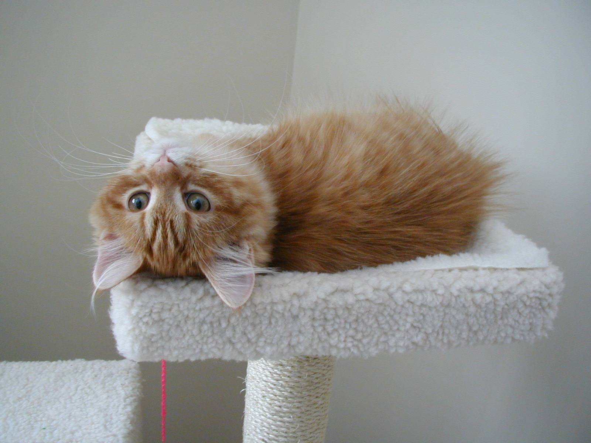
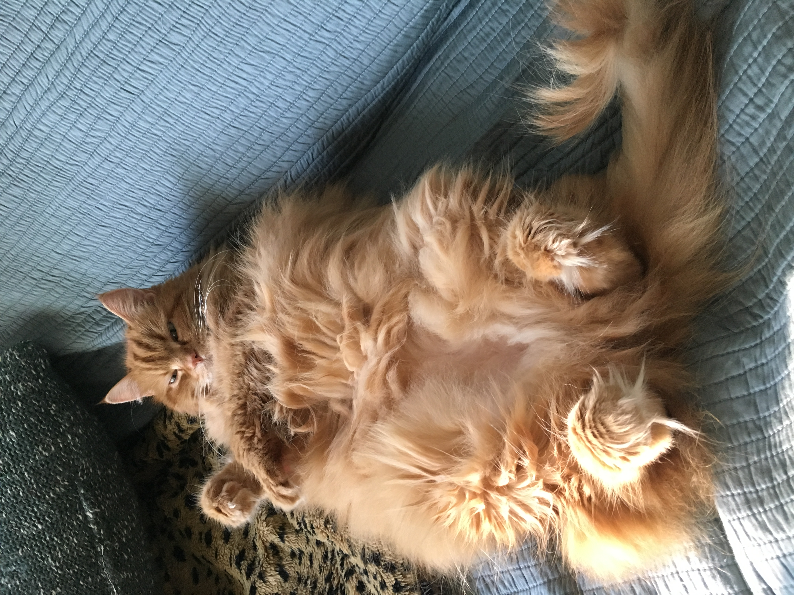

Paradox.
Gravity was optional. So, most days, was dignity.



Paradox was the one who taught this house that a cat can be perfectly comfortable at any angle at all.
Upside down on the cat tree. Belly-up in a sunbeam, all four feet in different directions. Draped over the arm of a chair in a shape no spine should permit. If there was a right way up, she never found it, and never seemed to feel the loss.
Deep ginger, thoroughly fluffy, and enormously good-natured about the whole business of being a cat. She and Howl arrived together and did most things together, which is why they turn up in the same photographs so often.
- COAT
- Deep ginger, thoroughly fluffy
- KNOWN FOR
- Being comfortable at impossible angles
- SIGNATURE MOVE
- Upside down, eyes open, entirely unbothered
- USUALLY WITH
- Howl